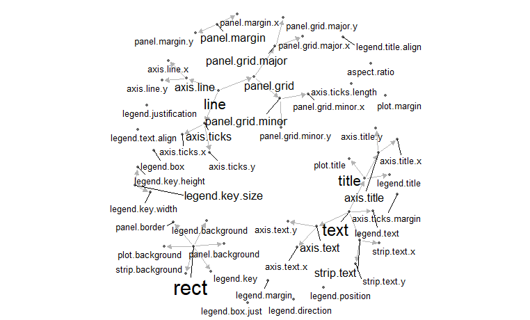
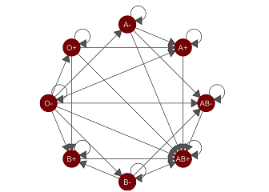

geomnet
Geom ：网格图(关系图)
geom_net(aes(from_id,to_id,fontsize), data , stat = "net",
position = "identity", na.rm = FALSE, layout.alg,
directed=FALSE,selfloops=FALSE,singletons=TRUE,
labelon = FALSE,labelcolour = NULL, labelgeom = "text") #label参数
网格图主题
theme_net(base_size,base_family)
参数：
- layout.alg,布局
- directed=FALSE,箭头
- selfloops=FALSE,显示循环
- singletons=TRUE,单点绘制
- directed箭头参数：
- arrow = NULL, arrowgap = 0.01, arrowsize = 1
ggplot2主题元素的继承关系示意图
library(dplyr)
library(geomnet)
data(theme_elements)
# data step
TEnet <- fortify(as.edgedf(theme_elements$edges[,c("parent", "child")]), theme_elements$vertices)
# create a degree variable for use later
TEnet <- TEnet %>%
group_by(from_id) %>%
mutate(degree = sqrt(10 * n() + 1))
# plot
ggplot(data = TEnet,
aes(from_id = from_id, to_id = to_id)) +
geom_net(layout.alg = "fruchtermanreingold",
aes(fontsize = degree), directed = TRUE,
labelon = TRUE, size = 1, labelcolour = 'black',
ecolour = "grey70", arrowsize = 0.5,
linewidth = 0.5, repel = TRUE) +
theme_net() +
xlim(c(-0.05, 1.05))

献血图
library(geomnet)
data(blood)
ggplot(data = blood$edges, aes(from_id = from, to_id = to)) +
geom_net(colour = "darkred", layout.alg = "circle", labelon = TRUE,
size = 15, directed = TRUE, vjust = 0.5, labelcolour = "grey80",
arrowsize = 1.5, linewidth = 0.5, arrowgap = 0.05,
selfloops = TRUE, ecolour = "grey40") +
theme_net()

与plotly互动
library(geomnet)
# devtools::install_github("ropensci/plotly")
library(plotly)
data(blood)
bloodnet <- fortify(as.edgedf(blood$edges), blood$vertices)
p <- ggplot(data = bloodnet, aes(from_id = from_id, to_id = to_id))
# create data plot
p2 <- p + geom_net(aes(size=Predominance, colour=type, shape=rho, linetype=group_to),
linewidth=0.75, labelon =TRUE, directed = TRUE, labelcolour="black") +
facet_wrap(~Ethnicity) +
scale_colour_brewer(palette="Set2")
ggplotly(p2)